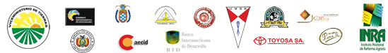

”POR UNA JUSTICIA AGROAMBIENTAL INTERCULTURAL CON EQUIDAD”
Con el gentil auspicio de:

El Tribunal Agrario Nacional tiene el agrado de invitar a todos los profesionales abogados, universitarios, docentes, organizaciones sociales, empresarios y personas particulares a participar del IV Seminario Internacional organizado por el Tribunal Agrario Nacional bajo el tema rector "El Derecho Agroambiental un Derecho Universal" ,a Realizarse del 6 al 8 de mayo de 2009 en la ciudad de Cochabamba